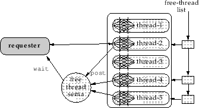
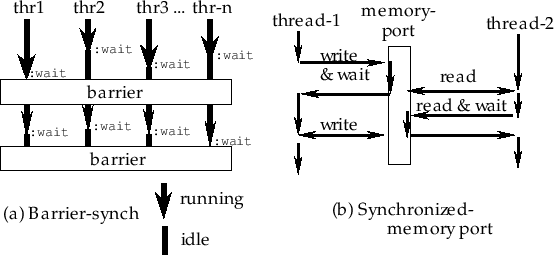

unix:getpid [関数]
-
-
このプロセスのプロセスID(16ビット整数)を返す。
unix:getppid [関数]
-
-
親プロセスのプロセスIDを返す。
unix:getpgrp [関数]
-
-
このプロセスのグループIDを返す。
unix:setpgrp integer [関数]
-
-
新しいプロセスのグループIDを設定する。
unix:getuid [関数]
-
- このプロセスのユーザーIDを返す。
unix:geteuid [関数]
-
-
このプロセスの使用可能なユーザーIDを返す。
unix:getgid [関数]
-
-
このプロセスのユーザーグループIDを返す。
unix:getegid [関数]
-
-
このプロセスの使用可能なユーザーグループIDを返す。
unix:setuid integer [関数]
-
-
このプロセスの使用可能なユーザーIDを設定する。
unix:setgid integer [関数]
-
-
このプロセスの使用可能なユーザーグループIDを設定する。
unix:fork [関数]
-
-
他のEuslispを作成する。サブプロセスに0が返され、
親プロセスにforkされたプロセスのpidが返される。
パイプで接続されたプロセスを作成するためには、11.3節に書かれている
system:piped-forkを使用すること。
unix:vfork [関数]
-
-
他のEuslispをforkし、その新しいEuslispのプロセスが終了するまで親プロセスの実行を
一時停止する。
unix:exec path [関数]
-
-
Euslispから他のプログラムへ実行を移す。
unix:wait [関数]
-
-
サブプロセスの中の１つのプロセスの終了を待つ。
unix:exit code [関数]
-
-
実行を終了し、codeを終了状態として返す。
ゼロは通常の終了を意味する。
unix:getpriority which who [関数]
-
-
このプロセスが持つ最大の優先順位を返す。
whichは、0(プロセス)、1(プロセスグループ)、2(ユーザー)のうちの
1つである。
unix:setpriority which who priority [関数]
-
-
whichとwhoで決定されるリソースの優先順位をpriorityに設定する。
whichは、0,1,2の内の1つである。
whoは、whichから相対的に解釈される
(ならプロセスを示し、ならプロセスグループを示し、
 ならユーザーのIDを示す)。
whoがゼロのとき、現在のプロセス、プロセスグループ、ユーザーを示す。
Euslispプロセスに低い優先順位を指定することは、大きい値を設定することであり、
これはプロセスを不利にする。
(unix:setpriority 0 0 10)は、優先順位を10に設定する。
ならユーザーのIDを示す)。
whoがゼロのとき、現在のプロセス、プロセスグループ、ユーザーを示す。
Euslispプロセスに低い優先順位を指定することは、大きい値を設定することであり、
これはプロセスを不利にする。
(unix:setpriority 0 0 10)は、優先順位を10に設定する。
unix:getrusage who [関数]
-
-
whoプロセスについてのシステムリソースの使用情報のリストを返す。
要素は、以下のような順番になっている。
もっと多くの情報が、lisp:rusageより得られる。
float ru_utime (sec.) /* user time used */
float ru_stime (sec.) /* system time used */
int ru_maxrss; /* maximum resident set size */
int ru_ixrss; /* currently 0 */
int ru_idrss; /* integral resident set size */
int ru_isrss; /* currently 0 */
int ru_minflt; /* page faults without physical I/O */
int ru_majflt; /* page faults with physical I/O */
int ru_nswap; /* number of swaps */
int ru_inblock; /* block input operations */
int ru_oublock; /* block output operations */
int ru_msgsnd; /* messages sent */
int ru_msgrcv; /* messages received */
int ru_nsignals; /* signals received */
int ru_nvcsw; /* voluntary context switches */
int ru_nivcsw; /* involuntary context switches */
unix:system [command] [関数]
-
-
サブシェルでcommandを実行する。
commandは、Bourn-shellで認識されるものでなければならない。
unix:getenv env-var [関数]
-
-
env-varの環境変数の値を返す。
unix:putenv env [関数]
-
-
プロセスの環境変数リストにenvを追加する。
envは、"VARIABLE=value"のように変数と値の等価を表す文字列である。
unix:sleep time [関数]
-
-
time秒間このプロセスの実行を一時停止する。
unix:usleep time [関数]
-
-
timeマイクロ秒間このプロセスを一時停止する。
(uは、マイクロを表現する。)
usleepは、Solaris2あるいは他のSystem5系のシステムには実現されていない。
2016-03-23